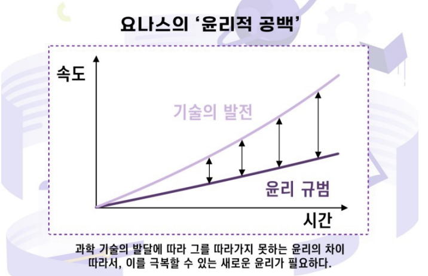

인공지능 사용제한에 대한 철학적 탐구
먼저 plan b(하이퍼 링크 첨부) 에서 한 번 언급 했던 역사는 반복되니 역사를 보고 배워야한다
는 입장은 예전부터 많은 철학자들이 주장해왔던 의견이다.
Was die Erfahrung aber und die Geschichte lehren, ist dieses, daß Völker und
Regierungen niemals etwas aus der Geschichte gelernt und nach Lehren, die
aus derselben zu ziehen gewesen wären, gehandelt haben.
역사와 경험이 가르쳐주는 것은, 민족과 정부가 역사를 통해서 무엇을 배우거나, 원칙을 끌어내
고 그에 따라 행동했던 적이 없다는 점이다.
- 게오르크 빌헬름 프리드리히 헤겔, <역사의 철학에 관한 강연 중 서론>
Toutes choses sont dites déjà ; mais comme personne n'écoute, il faut
toujours recommencer
모든 것은 이미 일컬어졌으나 아무도 듣지 않기 때문에 언제나 다시 시작해야만 한다.
- 앙드레 지드
The one who does not remember history is bound to live through it again.
역사를 기억하지 못한 자, 그 역사를 다시 살게 될 것이다.
조지 산타야나 (George Santayana, 에스파냐 출신의 미국 철학자)
인간이 역사를 보고 배워야 하나 이를 인지 하지 않고 같은 실수를 반복한다는 의미의 명언들이
다. 우리는 이를 망각하지 않고 또 같은 실수를 반복해서는 안된다.
다음으로는
지상에 천국을 건설하겠다는 시도가 늘 지옥을 만들어 낸다.
The attempt to make heaven on earth invariably produces hell.
—칼포퍼
인간이 편하려고 혹은 이익을 위해서 무언가를 개발 했을 때는 항상 좋지 않은 일로 변질 되었다
는 것을 함의한다

한스 요나스의 이론 중 하나인 윤리적 공백에 따르면 기술의 발전이 윤리가 그에 맞춰 발전하는
속도에 비해 너무 빨라서 그 사이에 공백이 생겨 문제가 발생하게 된다는 이론인데 결국 우리가
너무 빠른 속도로 발전을 하게 되면 문제가 발생하는 것은 시간 문제라는 것을 보여주는 이론이
다.
결국 우리는 철학적으로 보았을 때도 과거의 사례들을 교본 삼아 과거의 너무 빠른 발전으로 필
연적으로 발생할 실수를 반복하지 않기 위해서 인공지능의 발전 속도를 조절할 필요가 있음을
알 수 있다